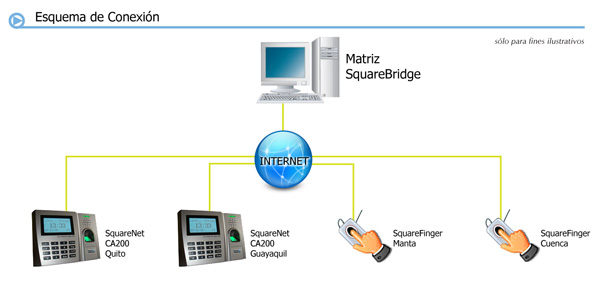

Utilitario que descarga automáticamente las marcaciones desde varios relojes biométricos para centralizarlos en su matriz. Es un servicio que se instala en su servidor de datos y se conectará cada cierto tiempo, o a una hora específica, a todos los puntos configurados para descargar la memoria de los relojes.
Es el complemento ideal para el ERP de su empresa (SAP, Dynamics AX, JDEdwards, ínfor) u otro sistema Administrativo Financiero.

La información recolectada pasa al módulo de Control de Asistencia para el respectivo procesamiento. Paralelamente, durante la descarga, SquareBridge carga los nombres de cada persona a la memoria del reloj para que sean visualizados cuando se realice una marcación.
Será su gran aliado para ambientes multi-sucursal donde cuenta con un dispositivo de marcación en cada local y desea que automáticamente se recolecte la asistencia a nivel nacional y se consoliden los datos en su matriz.
Como complemento de SquareNet Control de Asistencia, solicite asesoría y una cotización.